Confluent对接FusionInsight¶
使用场景¶
Confluent 4.1.0 ↔ FusionInsight HD V100R002C80SPC200 (HDFS/Kafka)
Confluent 4.1.0 ↔ FusionInsight HD 6.5 (HDFS/Kafka)
安装Confluent¶
操作步骤¶
- 登录Confluent官方网站下载页面：https://www.confluent.io/previous-versions/?_ga=2.102961223.611794173.1561088831-1783953529.1561088831
找到相应的版本下载
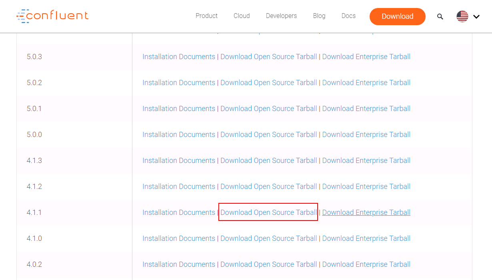
- 将下载的开源压缩包使用WinSCP工具上传至linux主机，使用
tar -xvf confluent-oss-4.1.0-2.11.tar解压
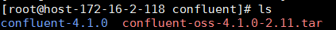
- 增加confluent环境变量
使用命令vi ~/.bashrc，增加confluent bin目录到PATH环境变量中，完成后使用source ~/.bashrc使之生效
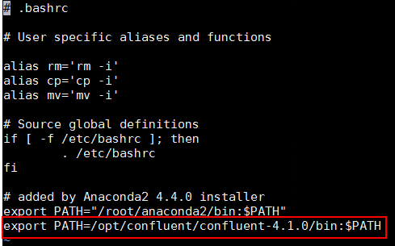
配置Confluent¶
说明：Confluent启动时会起自己的zookeeper和kafka服务，这里不做修改。需要更改的是connect， schema-registry以及ksql服务配置，使得这些服务直接对接FusionInsight HD安全模式的zookeeper和kafka服务
操作步骤¶
- 在confluent安装目录\share\java下新建路径，名为huawei
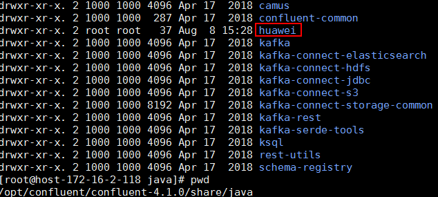
-
到FusionInsight 6.5.1的kafka客户端下获取 kafka-clients-1.1.0.jar， 注意即使对接FI HD 2.8版版本也需要对应于FI HD 6.5.1的 kafka-clients-1.1.0.jar 包，否则会报kafka版本匹配相关问题
-
将kafka-clients-1.1.0.jar拷贝至第一步新建的huawei路径下

- 在路径/opt/confluent/confluent-4.1.0/bin下找到connect-distributed文件，进行如下编辑：
在适当位置添加KAFKA_OPTS的启动JVM参数
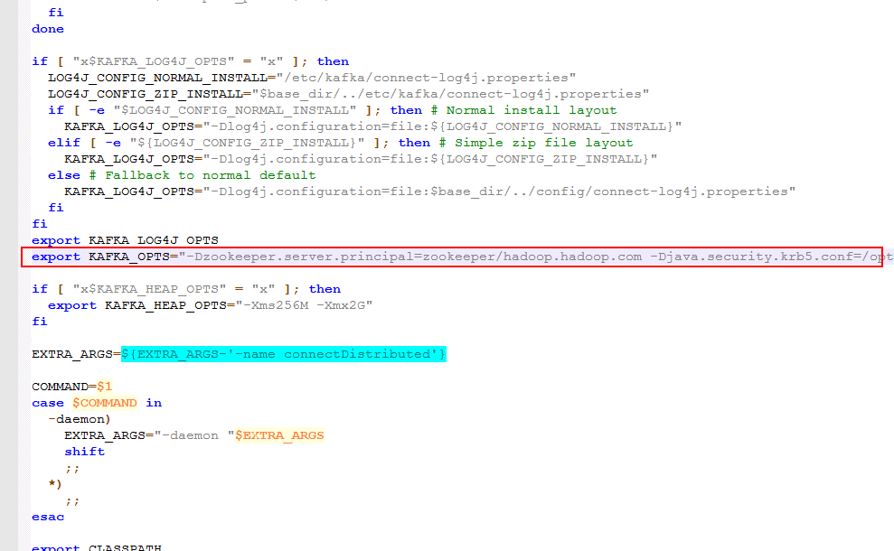
具体内容为：
export KAFKA_OPTS="-Dzookeeper.server.principal=zookeeper/hadoop.hadoop.com -Djava.security.krb5.conf=/opt/user_keytabs/101keytab/krb5.conf -Dkerberos.domain.name=hadoop.hadoop.com"
其中-Djava.security.krb5.conf=/opt/user_keytabs/101keytab/krb5.conf为对接集群认证的krb5.conf文件，可在集群 anager页面上获取
另外还可以添加 -Dsun.security.krb5.debug=true 打开kerberos认证日志开关，进行错误定位、排查
-
修改/opt/confluent/confluent-4.1.0/etc/kafka/connect-distributed.properties配置文件
-
修改bootstrap.servers为对接FI HD集群kafka地址

-
在配置文件最后增加内容如下,配置Kerberos认证相关参数：
sasl.mechanism=GSSAPI sasl.kerberos.service.name=kafka kerberos.domain.name=hadoop.hadoop.com security.protocol=SASL_PLAINTEXT sasl.jaas.config=com.sun.security.auth.module.Krb5LoginModule required \ useKeyTab=true \ storeKey=true \ keyTab="/opt/user_keytabs/101keytab/user.keytab" \ principal="developuser@HADOOP.COM"; producer.sasl.mechanism=GSSAPI producer.sasl.kerberos.service.name=kafka kerberos.domain.name=hadoop.hadoop.com # Configure SASL_SSL if SSL encryption is enabled, otherwise configure SASL_PLAINTEXT producer.security.protocol=SASL_PLAINTEXT producer.sasl.jaas.config=com.sun.security.auth.module.Krb5LoginModule required \ useKeyTab=true \ storeKey=true \ keyTab="/opt/user_keytabs/101keytab/user.keytab" \ principal="developuser@HADOOP.COM"; consumer.sasl.mechanism=GSSAPI consumer.sasl.kerberos.service.name=kafka kerberos.domain.name=hadoop.hadoop.com # Configure SASL_SSL if SSL encryption is enabled, otherwise configure SASL_PLAINTEXT consumer.security.protocol=SASL_PLAINTEXT consumer.sasl.jaas.config=com.sun.security.auth.module.Krb5LoginModule required \ useKeyTab=true \ storeKey=true \ keyTab="/opt/user_keytabs/101keytab/user.keytab" \ principal="developuser@HADOOP.COM";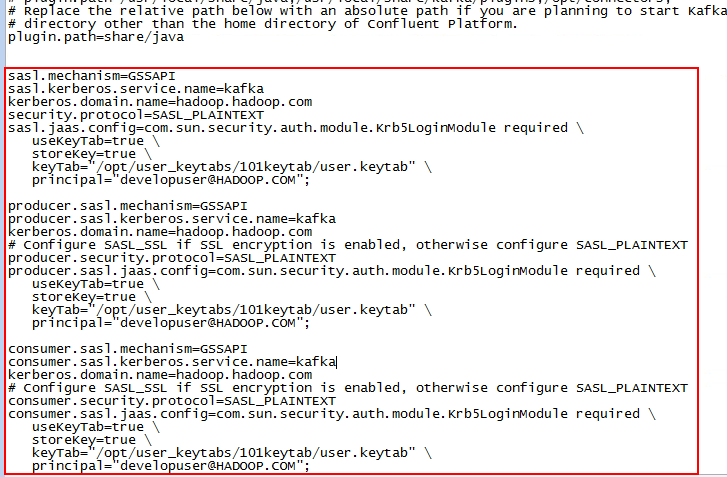
-
修改/opt/confluent/confluent-4.1.0/etc/schema-registry/connect-avro-distributed.properties配置文件，与上一步类似：
-
修改bootstrap.servers为对接FI HD集群kafka地址

-
在配置文件最后增加内容如下,配置Kerberos认证相关参数：
sasl.mechanism=GSSAPI sasl.kerberos.service.name=kafka kerberos.domain.name=hadoop.hadoop.com security.protocol=SASL_PLAINTEXT sasl.jaas.config=com.sun.security.auth.module.Krb5LoginModule required \ useKeyTab=true \ storeKey=true \ debug=true \ keyTab="/opt/user_keytabs/101keytab/user.keytab" \ principal="developuser@HADOOP.COM"; producer.sasl.mechanism=GSSAPI producer.sasl.kerberos.service.name=kafka producer.kerberos.domain.name=hadoop.hadoop.com # Configure SASL_SSL if SSL encryption is enabled, otherwise configure SASL_PLAINTEXT producer.security.protocol=SASL_PLAINTEXT producer.sasl.jaas.config=com.sun.security.auth.module.Krb5LoginModule required \ useKeyTab=true \ storeKey=true \ debug=true \ keyTab="/opt/user_keytabs/101keytab/user.keytab" \ principal="developuser@HADOOP.COM"; consumer.sasl.mechanism=GSSAPI consumer.sasl.kerberos.service.name=kafka consumer.kerberos.domain.name=hadoop.hadoop.com # Configure SASL_SSL if SSL encryption is enabled, otherwise configure SASL_PLAINTEXT consumer.security.protocol=SASL_PLAINTEXT consumer.sasl.jaas.config=com.sun.security.auth.module.Krb5LoginModule required \ useKeyTab=true \ storeKey=true \ debug=true \ keyTab="/opt/user_keytabs/101keytab/user.keytab" \ principal="developuser@HADOOP.COM";

-
修改/opt/confluent/confluent-4.1.0/bin/ksql-run-class文件如下，目的是在起ksql-server服务的时候能够在classpath里加载到之前导入的华为kafka jar包：
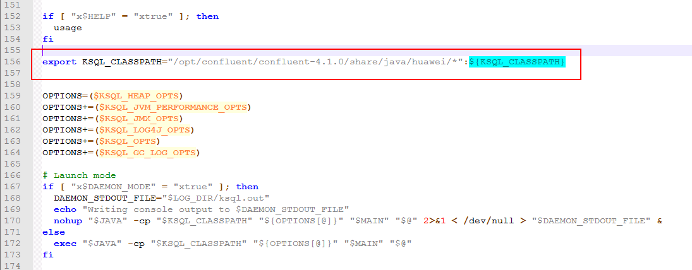
- 修改/opt/confluent/confluent-4.1.0/etc/ksql/ksql-server.properties配置文件
#bootstrap.servers=localhost:9092 security.protocol = SASL_PLAINTEXT bootstrap.servers=172.16.6.10:21007,172.16.6.11:21007,172.16.6.12:21007 kerberos.domain.name = hadoop.hadoop.com listeners=http://localhost:8088 ksql.server.ui.enabled=true sasl.mechanism=GSSAPI sasl.kerberos.service.name=kafka sasl.jaas.config=com.sun.security.auth.module.Krb5LoginModule required \ useKeyTab=true \ storeKey=true \ debug=true \ keyTab="/opt/user_keytabs/101keytab/user.keytab" \ principal="developuser@HADOOP.COM";

- 使用命令confluent start启动

使用Confluent KSQL服务查询FI HD集群Kafka的Topic¶
前提条件¶
完成 FI HD Kafka样例代码调试，具体参考 https://support-it.huawei.com/solution-fid-gw/#/Intelligent_Data_Developer_Platform 下载，调试kafka样例代码
操作步骤¶
- 使用如下命令启动KSQL CLI
LOG_DIR=/opt/confluent/confluent-4.1.0/ksql_logs /opt/confluent/confluent-4.1.0/bin/ksql http://localhost:8088

- 在KSQL CLI中使用如下命令创建一个STREAM
CREATE STREAM TEST_01 (id BIGINT) \ WITH (KAFKA_TOPIC='testtopic_01', VALUE_FORMAT='DELIMITED', KEY = 'id');

- 配置KAFKA样例代码中的producer代码,使用21007端口的安全模式：

- 同时在KSQL CLI中使用如下命令查询，检查结果：
select ID from TEST_01;

使用Confluent connect服务同步本地文件信息¶
前提条件¶
完成Confluent安装，配置
操作步骤¶
- 配置/opt/confluent/confluent-4.1.0/etc/kafka/connect-file-source.properties文件：
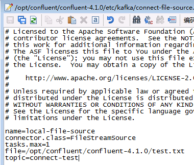
-
配置/opt/confluent/confluent-4.1.0/etc/kafka/connect-file-sink.properties文件：

-
在路径/opt/confluent/confluent-4.1.0下新建空文件test.txt
-
使用confluent start命令启动confluent

- 使用如下命令添加file-source, file-sink， 完成后查看connector状态
confluent load file-source confluent load file-sink confluent status connectors
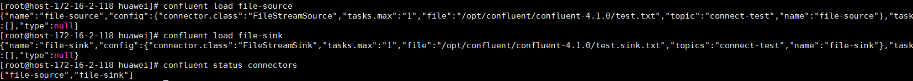
- 在test.txt空文件中输入信息，保存，在生成的test.sink.txt文件中查看信息同步情况

- 登录对接集群kafka客户端，使用命令
bin/kafka-console-consumer.sh --topic connect-test --bootstrap-server 172.16.6.10:21007,172.16.6.11:21007,172.16.6.12:21007 --consumer.config config/consumer.properties -from-beginning查看同步kafka的topic
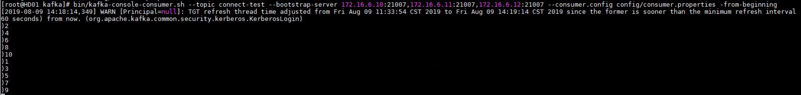
使用Confluent connect服务同步本地文件到FusionInsight HDFS¶
前提条件¶
完成Confluent安装，配置
操作步骤¶
- 登录对接FusionInsight HD集群，查看hdfs配置：

- 安装kafka-connect-hdfs connector, 参考：https://docs.confluent.io/current/connect/managing/install.html
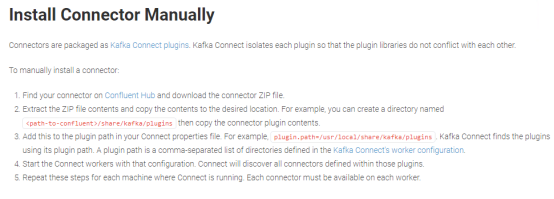
在Confluent Hub上下载版本匹配的plugin包：

- 将下载好的confluentinc-kafka-connect-hdfs-4.1.0.zip压缩包本地解压，并使用WinSCP上传到/opt/confluent/confluent-4.1.0/share/java路径下
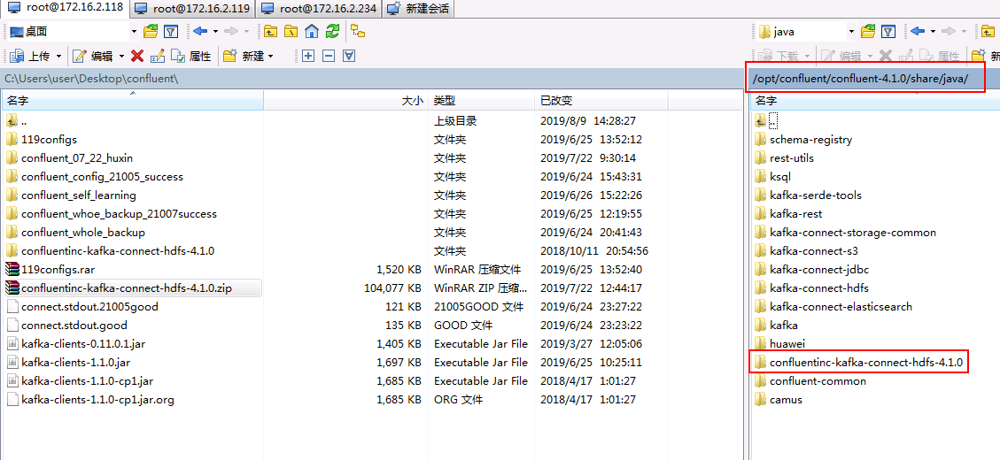
- 修改/opt/confluent/confluent-4.1.0/etc/kafka/connect-distributed.properties配置文件中的plugin.path

- 修改/opt/confluent/confluent-4.1.0/etc/schema-registry/connect-avro-distributed.properties配置文件中的plugin.path
- 配置/opt/confluent/confluent-4.1.0/etc/kafka-connect-hdfs/quickstart-hdfs.properties
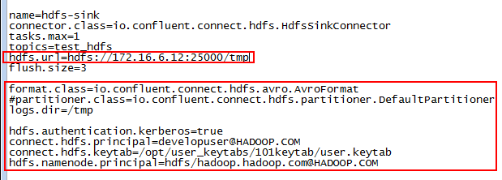
- 修改/opt/confluent/confluent-4.1.0/etc/kafka/connect-file-source.properties文件同步的topic为test_hdfs:
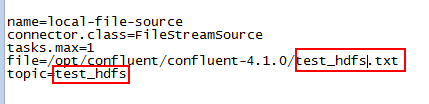
-
在/opt/confluent/confluent-4.1.0路径下新建test_hdfs.txt的空文件
-
在对接集群的hdfs上查看/tmp路径是否存在,没有需要创建
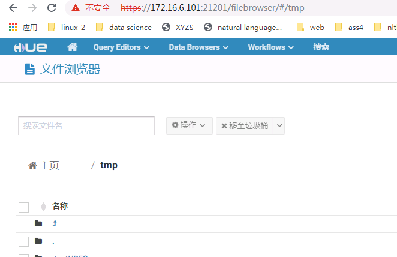
- 重启confluent, 启动之后检查
file-source是否为跟新后的配置，如果不是，使用confluent unload file-source卸载重新confluent load file-source加载

- 使用如下命令加载hdfs-sink
confluent load hdfs-sink -d /opt/confluent/confluent-4.1.0/etc/kafka-connect-hdfs/quickstart-hdfs.properties

- 打开/opt/confluent/confluent-4.1.0/test_hdfs.txt文件,输入以下信息

- 到对接集群kafka端消费用于传输的topic test_hdfs
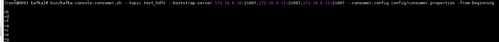
- 登录到对接集群的hdfs上/tmp路径下查看结果
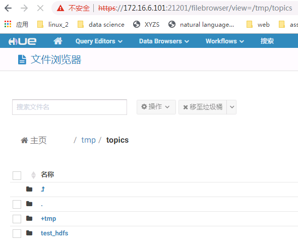

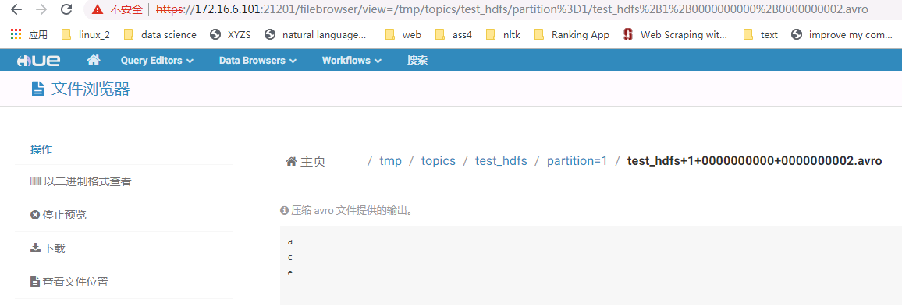